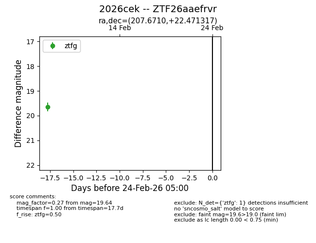
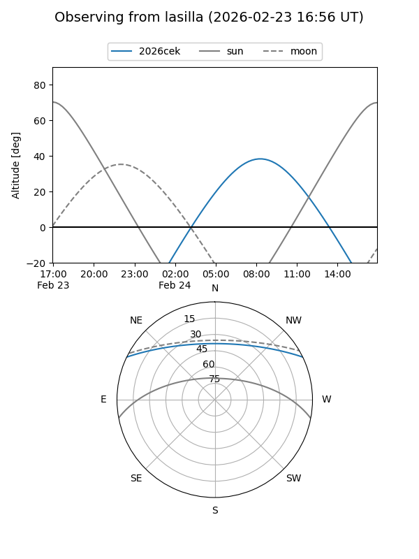
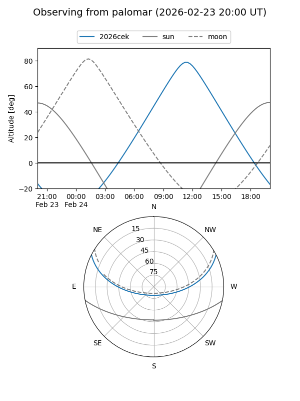

2026cek
Target 2026cek at 2026-02-24 09:08
Aliases and brokers:
FINK: link
Lasair: link
ALeRCE: link
TNS: link
YSE: link
alt names
ZTF26aaefrvr (ztf,fink_ztf)
2026cek (tns,yse)
Coordinates:
equatorial (ra, dec) = 207.6710,+22.47132
equatorial (HMS+DMS) = 13:50:41.03,+22:28:16.74
galactic (l, b) = (17.0551,+75.78282)
Flags:
Photometry:
last ztfg=19.64
1 ztfg detections
Lightcurve

Visibility


Additional plots